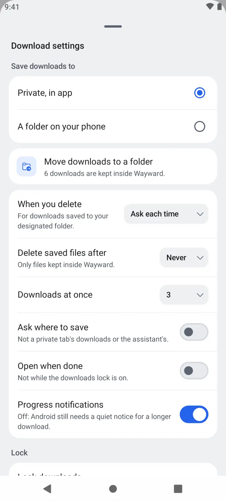
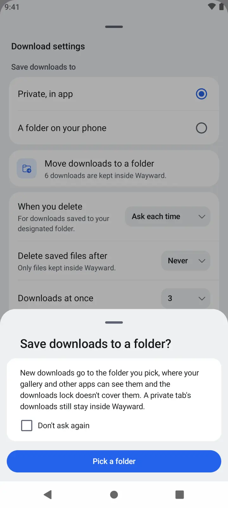
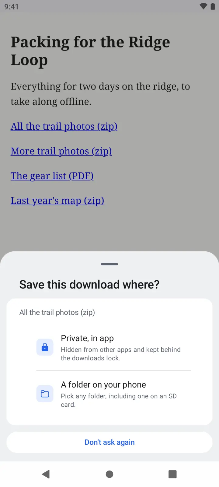
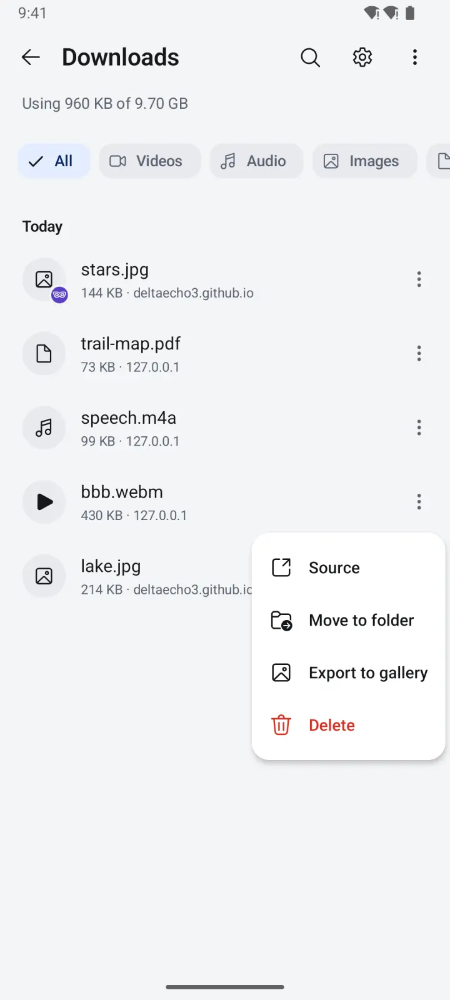
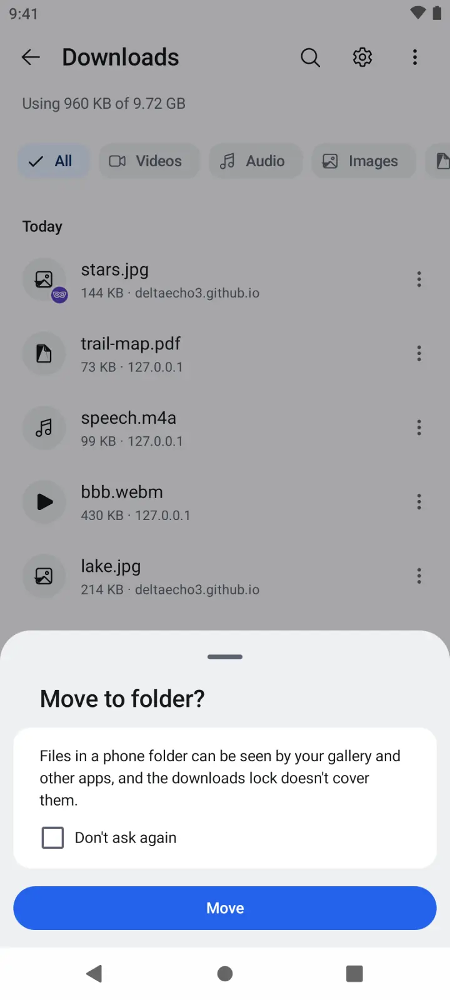
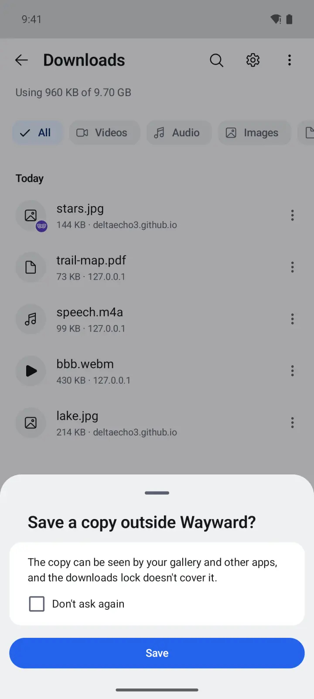
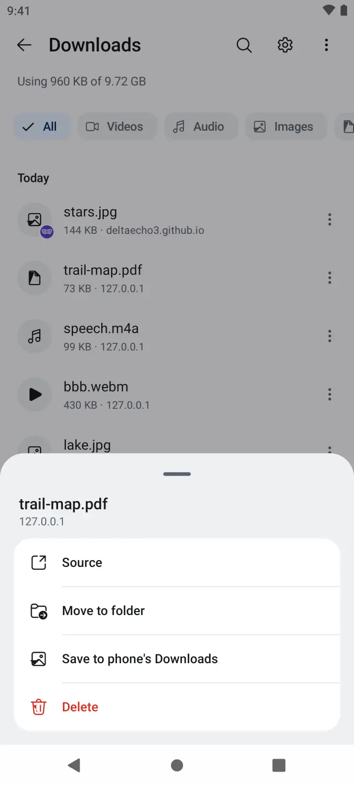

Choose where downloads go
How-to
By default, Wayward stores downloads inside the app, behind the downloads lock. Your gallery and other apps can't see them. You can keep it that way, send them to a folder of your own, or move single files out when you need them elsewhere.
Inside Wayward, or a folder
Open the ⋮ menu, then Settings > Downloads (or tap the gear on the Downloads screen). Under Save downloads to:
- Private, in app (the default): hidden from other apps and kept behind the downloads lock.
- A folder on your phone: pick any folder, including one on an SD card. Your gallery and other apps can see what's saved there, and the downloads lock doesn't cover it, so Wayward asks first (Save downloads to a folder?): tap Pick a folder. After that it says "Saving to" and the folder, with Change folder.
A private tab's downloads always stay inside Wayward, whichever you pick. They're marked with a small mask on their icon.


To move everything already kept inside Wayward to your folder in one go, tap Move downloads to a folder. It says how many there are.
Ask each time
Turn on Ask where to save (further down the same sheet) and each download asks Save this download where?: Private, in app or A folder on your phone. Don't ask again turns the question off. A private tab's downloads and the assistant's don't ask.

Move one file out, or back in
On the Downloads screen, tap a finished download's ⋮:
- Move to folder moves it to a folder you pick, after asking Move to folder? (with Don't ask again).
- Export to gallery saves a copy of a video, sound or picture where your gallery sees it, after asking Save a copy outside Wayward?. A document has Save to phone's Downloads instead.
- For a file that's in your folder: Move to Wayward moves it back inside, behind the downloads lock, and Remove from list takes it off the list but leaves the file where it is.




To move or share several at once, hold one download, tap the others, then use Move to folder, Move to Wayward or Share on the bar at the bottom. Sharing files kept inside Wayward, or from a private tab, asks Share outside Wayward? first, since the app you share with can keep a copy.
Deleting files in your folder
When you delete decides what Delete does to a download saved in your folder: Ask each time (where it starts), Delete from phone, or Remove from list, which keeps the file. Downloads kept inside Wayward are always deleted.